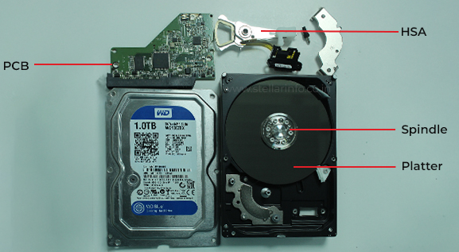

olá a todos, hoje vou falar um pouco sobre OPSEC sim, o famoso OPSEC, a ''privacidade'' absoluta, onde você esconde ou restringe suas informações pessoais ao extremo por que? ou você é doido ou tá devendo ou só é lucido..
SOCK PUPPET
essa é uma forma bem básica e simples de se praticar (ou até mesmo viver) dessa privacidade absoluta. é um meio imoral, porém eficaz. se baseia em mentir tudo sobre você, tanto nas redes sociais quanto para os seus amigos do zap, discord, etc
Por que é tão eficaz?
se o seu nome for Arthur e você se passar por Joaquim, claramente quem está atrás de você irá atrás do Joaquim. fazendo isso você deixa um ''rastro falso''.. ou será que não? veja, de fato é muito fácil se passar por outra pessoa, pegar fotos, videos e audios e mandar para seu servidorzinho do discord falando ''sou eu!'', mas não é facil realmente manter a persona que você criou. com o tempo, você pode começar a misturar hábitos, vocabulários, opiniões, nomes de usuário, etc.. é difícil quebra-la pois não se trata de uma camada de código, nem de uma conta privada que você não tem acesso... ou será que não?
Engenharia Social
aqui entramos num tópico bem famoso, a tão dita ''Engenharia Social''. trata-se da manipulação sobre um individuo, onde você induz ele a cometer algo ou falar algo que não devia (ou não se encaixa na persona)
vamos pegar um exemplo simples em um cenário onde o atacante quer invadir o sistema de um cassino. ao invés de invadir o computador diretamente, o atacante explora a confiança, medo ou urgência de quem realmente CONTROLA o computador
Atacante: “aqui é do banco brasil, detectamos um problema na sua conta. precisamos do código enviado ao seu celular.”
ao entregar o código, a vitima poderá perder acesso a conta.
e isso se aplica a Como quebrar uma Sock Puppet, pois ao criar um vinculo de afeto com o individuo, ele começará a misturar muito mais os hábitos pessoais com sua vida falsa, e em algum momento, ele irá ceder pode levar dias ou meses, talvez até mais, mas ninguém vence do homem paciente
Curiosidade
ah, sobre o cenário que eu descrevi do cassino, saiba que foi um caso real! em Setembro de 2024, o grupo hacker conhecido por ''Scattered Spider'' conseguiu invadir a rede corporativa dos dois maiores cassinos do mundo, a MGM Resorts e a Caesars Entertainment.
Como??
bem simples e resumindo, pesquisaram por funcionarios reais das empresas no Linkedin, e a partir disso se passaram pelos funcionarios no suporte tecnico da empresa, que por descuido, removeu a autenticação de dois fatores da conta ORIGINAL do empregado. após isso, conseguiram ter acesso as camadas mais internas dos sistemas dos cassinos, injetaram um ransomware para criptografar informações, roubaram dados confidenciais de clientes e funcionarios, e pediram um resgate milionario para em criptomoedas para devolver o controle dos sistemas e não vazar tudo
Como viver no Anonimato
quer manter sua vida pessoal longe da internet? atente-se aos seus posts. não deixe que seja fácil para o atacante encontrar seu instagram pessoal ou plataforma de trabalho. separe seus nomes nas redes
no discord: hackerzinho02x no instagram: @wellingtonbezerra
também vale a pena revisar se você tem contas antigas ou se está deixando metadados nas fotos em que manda
vale a pena definir de quem você está se escondendo para assim medir os esforços ou capacidades do atacante está se escondendo de um governo ou de um zé da esquina? um hacker com ferramentas ou alguém que sabe usar as ferramentas do jeito certo?
Proteja seus dados sensiveis!
não confie em qualquer site da internet, pois muitos foram ou serão vazados. confie apenas nos que forem realmente essenciais.
não passe seu CPF, RG, Certidões, etc, para qualquer site, tenha cautela, pois boa parte destes sites (ressalva nos que não são empresas grandes, como mercado livre, amazon, etc) estão aptos a terem seus dados vazados (ou até vendidos, né facebook)
Persona Digital
crie uma persona que funcionará apenas para internet, e tenha certeza de que elas não se cruzem nunca com sua vida pessoal.
Isolamento de Contas
nunca use a mesma senha ou email variás vezes, tenha vários, se possivel até temporarios. um bom método de isolamento é ter varios emails, cada um destinado a uma coisa especifica da sua vida
1º Email: guarda todos os dados pessoais sensiveis que você tem, nele ficam as contas principais e pessoais. Apenas use-o em sites que você realmente tem certeza que são confiáveis
2º Email: não guarda nenhum dado sensivel, mas é usado para redes sociais e sites de entretenimento
3º Email: basicamente o email lixão. use-o de qualquer modo, faça qualquer coisa com ele, já que nele não tera nenhuma informação pessoal sobre você.
OPSEC de Rede e Conectividade
use redes descentralizadas, como Tor ou I2P sempre se atente com seu IP, faça uso de VPNs comerciais e sem registros encadeadas, como o Mullvad, Proton VPN, IVPN ou Nord VPN. é importante ressaltar que usar uma VPN não garante anonimato sozinha, já que ''nologs'' não significa ausência total de dados. Pagamentos, suporte e informações da sua conta podem continuar armazenados.
ainda assim, as 2 melhores para privacidade são o Mullvad e o Proton VPN.
Browser Fingerprint
mitigação de rastreamento baseado na resolução da sua tela, fontes instaladas, extensões e GPU.
- ative a proteçao contra fingerprinting nas configurações de privacidade do navegador
- bloqueie cookies de terceiros e rastreadores
- evite instalar muitas extensões, já que uma combinação incomum torna voce identificavel
- não altere manualmente
user-agent, resolução, fontes ou informações da GPU — isso pode deixar sua configuração ainda mais unica - evite usar tela cheia; mantenha um tamanho de janela comum
- não instale fontes desnecessarias
- mantenha o navegador e sistema atualizados
- use perfis separados para atividades diferentes e não entre nas mesmas contas pessoais
- limpe cookies e dados dos sites ao encerrar ao terminar de usar seu pc
a ideia não é fornecer informações falsas aleatórias, mas sim fazer com que seu navegador pareça o maximo com o maior grupo possivel de usuarios. basicamente, você vai se camuflar no meio de muitos outros usuarios
Navegadores que prezam realmente pela sua privacidade:
LibreWolf, Firefox, DuckDuckGo. e para você que quer comodidade mas ainda sim preza pela privacidade, eu recomendaria o Brave.
Vazamento de Metadados da Rede
controle vazamentos de DNS, WebRTC, e trafego IPv6 um vazamentos de metadados de rede acontece quando parte da conexao revela informações fora do canal de proteção usado um DNS Leak acontece quando as consultas que traduzem nomes de sites em endereços IP são enviadas ao provedor de internet, mesmo com uma VPN ligada O WebRTC (recurso usado em chamadas e comunicação pelo navegador) pode revelar endereços IP em certas configurações ja o vazamento de IPv6 acontece quando a VPN protege apenas o tráafego IPv4, e o trafego IPv6 sai diretamente pela conexão normal
para contornar isso é simples, basta ativar na VPN que você está usando as opções de DNS Leak Protection e Kill Switch, fazendo com que ela use apenas os próprios servidores DNS.
O que cada um faz??
Kill Switch = bloqueia a internet caso o tunel da VPN caia, impedindo que consultas e trafego saiam pela conexão normal
DNS Leak Protection = ative na VPN as opções DNS Leak Protection, deixando-a utilizar os proprios servidores DNS
para o WebRTC, procure nas configurações de privacidade algo que impeça conexões WebRTC fora do proxy ou da VPN (desativar ele funciona, mas pode quebrar as chamadas)
no caso do IPv6, o ideal mesmo seria usar uma VPN que ofereça suporte completo a ele. mas, caso a VPN proteja apenas IPv4, você pode desativar temporariamente o IPv6 no seu adaptador de rede do sistema (pode ocasionar problemas em algumas redes). teste as conexões em serviços como BrowserLeaks ou IPLeak. o IP e o DNS exibidos devem pertencer a conexão que está protegida, não ao seu provedor residencial. (basicamente, lá deve aparecer que você está conectado no cu de judas, e não em xique xique bahia)
Segurança Wi-Fi e MAC
faça uso do MAC Spoofing para mascarar o endereço fisico da sua placa de rede (MAC). nunca use redes publicas sem camadas extras de proteção.
Analise de Tráfego
para evitar com que sua atividade não seja monitorada, utilize conexões criptografadas e/ou serviços que ofereçam ofuscação, preenchimento de pacotes e variação de tempo. fazendo isso os pacotes ficam mais parecidos em tamanho e menos previsiveis, dificultando a identificação da atividade apenas pelo volume e horário
Hardware e OS
faça uso de sistemas operacionais baseados em RAM (fazendo isso haverá 0 rastros após desligar) se o seu foco é o OS citado anteriormente, use o TailsOS. ou pode se usar uma OS baseada em virtualização isolada (ou seja, usar maquina virtual).
baixe a maquina virtual: VirtualBox baixe a OS: QubesOS, Whonix
Curiosidade
sabia que a VPN do Mullvad opera do mesmo modo que um sistema operacional baseado em RAM? no dia 18 de abril de 2023. a policia sueca entrou no escritorio da Mullvad, em Gotemburgo, com um mandado de busca para apreender computadores que pudessem ter dados de clientes. isso aconteceu por um pedido das autoridades Alemãs, que devido a uma investigação sobre um ataque de extorsão cibernetica, pistas levaram a IPs da Mullvad.
acabou que a policia saiu sem nada, pois os dados que a mullvad contém simplesmente não existem em seus sistemas. no momento em que o processador processa as chaves de criptografia e os tuneis dos usuarios, ele joga para a RAM. tudo sobre o usuario, o tunel, a chave de criptografia fica la na RAM, e quando ele desliga, a RAM desliga e apaga todos os dados, reduzindo muito a possibilidade de recuperação
Telemetria de Software
desativação de relatorios automaticos de erros, rastreamento de sistemas (como windows, android e iOS) e pesquisas de hardware.
Criptografia de Disco Completo
use ferramentas de criptografia forte, como: Veracrypt e LUKS tem o BitLocker, ele pertence a Microsoft e vem integrado no Windows, então cabe a você decidir se confia ou não. porém se for usar ele, usa sem nuvem, com uma chave de recuperação local
Hardening de Dispositivos
desativação fisica de bluetooth, localização, microfones e cameras integradas em celulares e computadores
Desativação dos coprocessadores ocultos das CPUs (Back-Door)
Bit HAP = a forma mais limpa de desativar o Intel ME me_cleaner = ferramenta criada pela comunidade para corromper quase todo o codigo do intel ME
O que é Intel ME? é um pequeno computador presente nos chipsets das motherboards da Intel desde 2008. ele roda o proprio sistema operacional e um firmware independente do windows ou de qualquer outro sistema que você use
O que é alarmante? a presença do Intel ME permite com que equipes de TI de empresas acessem, atualizem, liguem, desliguem ou configurem computadores a distancia, mesmo se a maquina estiver desligada (ligada na tomada e a rede) eles tem um nivel de privilegio superior ao proprio kernel da sua OS, tendo acesso direto a memoria, teclado, tela e rede. fica ligado 24 horas por dia, consumindo energia da placa mae enquanto estiver conectada a tomada é alarmante também pois o código que roda dentro dele é fechado e nunca foi totalmente documentado pela Intel
Bit HAP - O que faz?
no firmware, quando um bit chamado HAP é ativado, o Intel ME faz a checagem inicial de energia da placa mãe, e logo em seguida desliga a si mesmo
me_cleaner - O que faz?
essa ferramenta apaga e corrompe quase todo o codigo do Intel ME gravados no chip da BIOS, deixando apenas a linha de codigo minima essencial (de 90 kB a 300 kb) exigida para o computador dar boot e não desligar sozinho depois de 30 minutos
O risco: modificar o firmware da BIOS diretamente exige conhecimento bem avançado, e muitas vezes requer um gravador fisico de circuitos (como um raspberry pi ou pinça SOIC-8) conectado diretamente a placa mãe, e qualquer erro pode brickar o computador
Comunicação Segura
Criptografia de Ponta a Ponta (E2EE)
são plataformas que não exigem metadados associados, sendo elas:
Session = app de mensagens que não exige numero de telefone nem email você recebe um ''Session ID'' para adicionar as pessoas. as mensagens são criptografadas e passam por uma rede descentralizada, com foco em esconder metadados (perdeu em vorcaro)
SimpleX Chat = também é um app de mensagens criptografado, porém não cria um identificador permanente (ID) para o usuario. para conversar, você compartilha um link ou QR Code.
Molly (Versão modificada do Signal) = versão independente e reforçada do Signal para Android. usa a rede do Signal (outro app de mensagens focado em privacidade), mas adiciona recursos como banco de dados protegido por senha, bloqueio automatico, notificações sem Google e limpeza de informações sensiveis da memoria RAM.
Principio Zero-Knowledge
quando o provedor da nuvem não consegue ler seus dados criptografados, para aplicar este principio, criptografe os arquivos do seu aparelho antes de envia-los para a nuvem. assim, Google Drive, OneDrive ou Dropbox recebem apenas os dados embaralhados.
- crie um cofre criptografado usando Cryptomator ou Veracrypt
- coloque esse cofre dentro da pasta sincronizada com a nuvem
- use uma senha forte e guarde a chave de recuperação fora da internet (papelzinho ou usb)
- ative autenticação de dois fatores na conta da nuvem
- é bom manter uma cópia local criptografada como backup
Wiping
wiping consiste na destruição dos seus dados. sobrescrita de dados em discos rigidos e SSDs, para impedir a recuperação de alguma equipe forense de arquivos deletados
Atenção: quebrar um HD não impede que ele consiga ser recuperado
para realmente impedir que um HD consiga ser recuperado, procure os Discos Internos, mais conhecidos como Platters, pois é la que os dados ficam realmente gravados
Tradução: use um martelo e uma chave de fenda para perfurar os componentes do HD isto vai quebrar o Platter o som será como de um chocalho se você tiver sucesso
alguns Platters são de metal e não se partirão totalmente, mas se você perfurar todo o HD de uma ponta para a outra com a chave de fenda, o resultado será o mesmo
localização do Disco Interno (Platter)

Rastro de Dinheiro
de preferencias a moedas de privacidade, XMR e Monero. faça uso dos criptoativos criptografados por padrão em nivel de blockchain ambas são moedas que ocultam automaticamente a informação de quem enviou, quem recebeu e qual foi o valor transferido
isso ajuda a evitar que qualquer pessoa consulte a blockchain e descubra seu saldo ou acompanhe suas transações mesmo assim, não garante anonimato absoluto: corretoras e endereço IP podem revelar sua identidade
Uso de Dinheiro em especie
também de preferencia a dinheiro em especie, como notas fisicas, cartões virtuais mascarados que aceitam cartoes de presente comprados anonimamente, ou se você realmente estiver desesperado, compra um laranja no telegram (é crime obvio)
isso foi tudo pessoal, espero que tenham gostado do get ready with me pra ser um psicotico por privacidade
um agradecimento especial ao zaack1337 por ter me dado a ideia de trazer este conteudo pra vocês
obrigado por ter lido